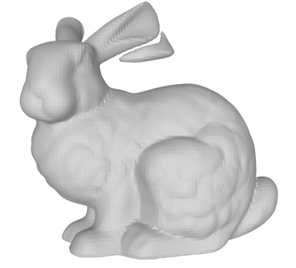

|
Benjamin Martinez I am a 4th year undergrad student at Stanford University studying computer science with a concentration on visual computing. This concentration covers my interests in machine learning, graphics, computer vision, and virtual reality. I currently work at the Stanford Vision and Learning Lab working on the BEHAVIOR-1K project. Broader interests include philosophy, mysticism, language, film, animation, video games, mindfulness, and surfing. |

|
ProjectsSelect things I've worked on for classes, internships, or in my free time. |

|
BEHAVIOR-1K: A Benchmark for Embodied AI with 1,000 Everyday Activities and Realistic Simulation
BEHAVIOR is a human-centered simulation benchmark where embodied AI agents need to plan and execute navigation and manipulation strategies based on sensor information to fulfill up to 1,000 household activities across 50 scenes. BEHAVIOR tests the ability of agents to perceive the environment, plan, and execute complex long-horizon activities that involve multiple objects, rooms, and state changes, all with the reproducibility, safety, and observability offered by a realistic physics simulation. project page / paper / code |
Machine Learning |
Computer Graphics |
Generative ModelsHere I study, reimplement, or experiment with papers or ideas in 3D geometry. Note: These are not original contributions these are for my education. |
|
|
Depth NeRF
I self studied NeRF and reimplemented the model to predict a depth map rather than color. |

|
PointNet
Implemented a vanilla PointNet, training an autoencoder and variational autoencoder for reconstructing 3D shapes in point cloud representation |
|  |
Neural Implicit Representations for 3D shape modelling
Trained model to learn signed distance field (SDF) of input bunny point cloud. Then implemented the marching cubes algorithm to extract the mesh from the SDF. |
Coursework
CS related courses
CS 107E (Computer Systems), CS 44N (Great Ideas in Graphics), CS 161 (Algorithms), CS 231N (Deep Learning For Computer Vision), EE 267 (Virtual Reality), MATH 104 (Matrix Theory), CS 111 (Operating Systems), CS 248B (Computer Graphics: Animation and Simulation), PSYC 221 (ML in Neuroimaging), CS 221 (AI Principles), CS 205L (Lin Alg & Optimization), CS 248A (Computer Graphics: Rendering, Geometry, and Image Manipulation), CS 229 (Machine Learning), CS 348N (Neural Models for 3D Geometry - audited)
Taking this year: CS 224N (NLP), CS 149 (Parallel Computing), CS 348B (Computer Graphics: Image Synthesis Techniques), CS 234 (Reinforcement Learning), CS 348E (Character Animation and Simulation)
Other select courses I've liked
Heidegger & Mysticism, Psycholinguistics, Zhuangzi, Buddhist Philosophy, Theory of Discourse, Experimental Animation, Wittgenstein, Neurobiology of Sleep, Mindfulness, Immersive (VR) Cinema